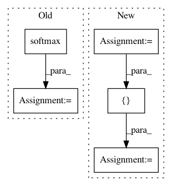

2c6ce0ebfa9537246878e8fb9144e0c879fca17d,cube/models/vocoder.py,BeeCoder,_predict_one,#BeeCoder#Any#Any#Any#,97
Before Change
for w, b, hid in zip(self.softmax_w, self.softmax_b, output_hidden):
logits = w.expr(update=True) * hid + b.expr(update=True)
if runtime:
logits = dy.softmax(logits)
output.append(logits)
return output
def learn(self, wave, mgc, batch_size):
After Change
def _predict_one(self, mgc, last_fft=None, runtime=True):
if last_fft is None:
last_fft_real = np.zeros(self.FFT_SIZE)
last_fft_imag = np.zeros(self.FFT_SIZE)
else:
last_fft_real = np.real(last_fft)
last_fft_imag = np.imag(last_fft)
hidden = dy.concatenate([dy.inputVector(mgc), dy.inputVector(last_fft_real), dy.inputVector(last_fft_imag)])
for w, b in zip(self.hidden_w, self.hidden_b):
hidden = dy.tanh(w.expr(update=True) * hidden + b.expr(update=True))
output_real = self.output_real_w.expr(update=True) * hidden + self.output_real_b.expr(update=True)
output_imag = self.output_imag_w.expr(update=True) * hidden + self.output_imag_b.expr(update=True)
output = [output_real, output_imag]
return output
def learn(self, wave, mgc, batch_size):
In pattern: SUPERPATTERN
Frequency: 3
Non-data size: 5
Instances
Project Name: tiberiu44/TTS-Cube
Commit Name: 2c6ce0ebfa9537246878e8fb9144e0c879fca17d
Time: 2018-10-22
Author: tibi@racai.ro
File Name: cube/models/vocoder.py
Class Name: BeeCoder
Method Name: _predict_one
Project Name: wenwei202/iss-rnns
Commit Name: b9b992e52fb42f137e6aa0de6e9f201ef0140571
Time: 2016-10-21
Author: seominjoon@gmail.com
File Name: basic/model.py
Class Name:
Method Name: bi_attention
Project Name: NifTK/NiftyNet
Commit Name: 6f405851fcb3be013441810be9a7edbbc04fd2a3
Time: 2018-05-15
Author: d.shakir@ucl.ac.uk
File Name: niftynet/layer/loss_segmentation.py
Class Name: LossFunction
Method Name: layer_op